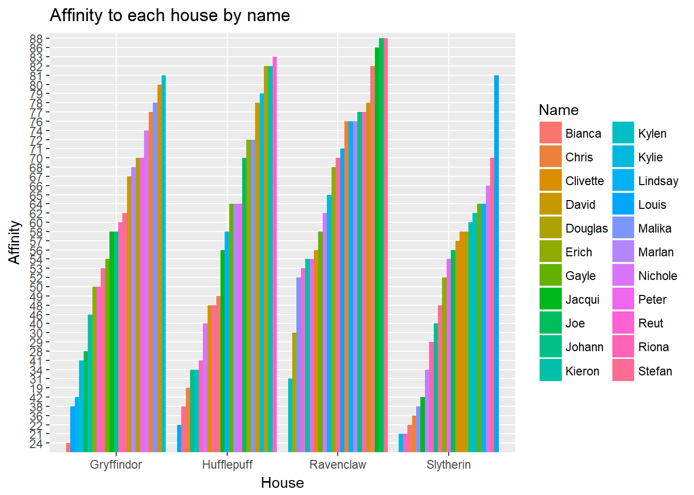
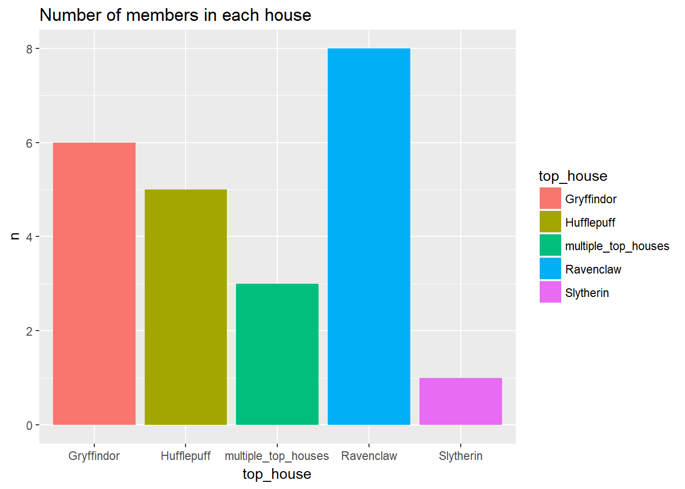
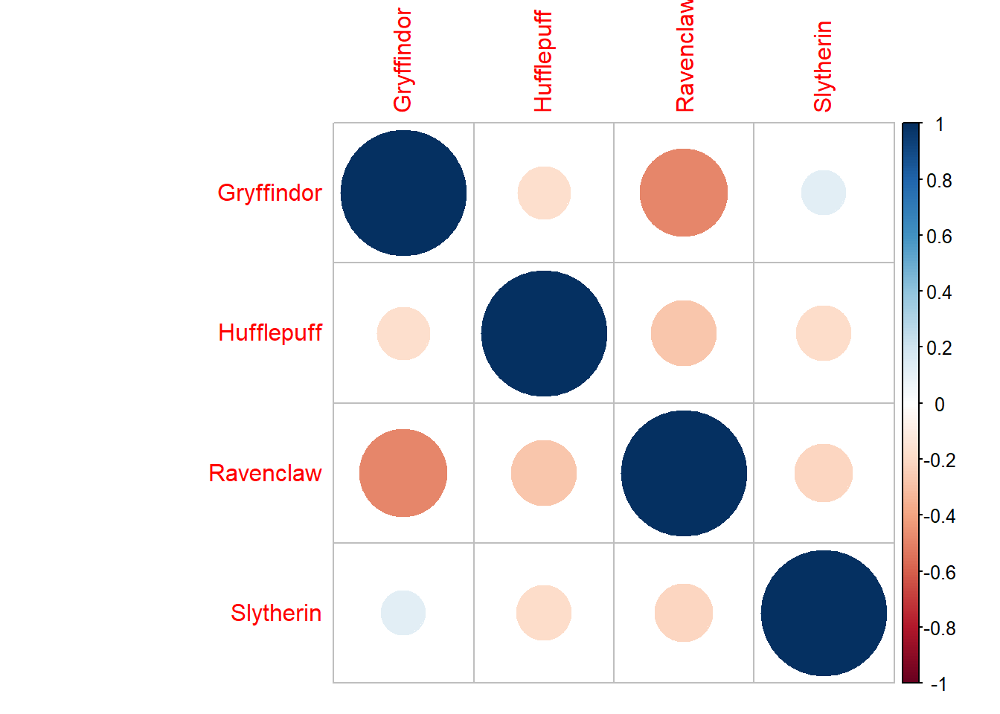
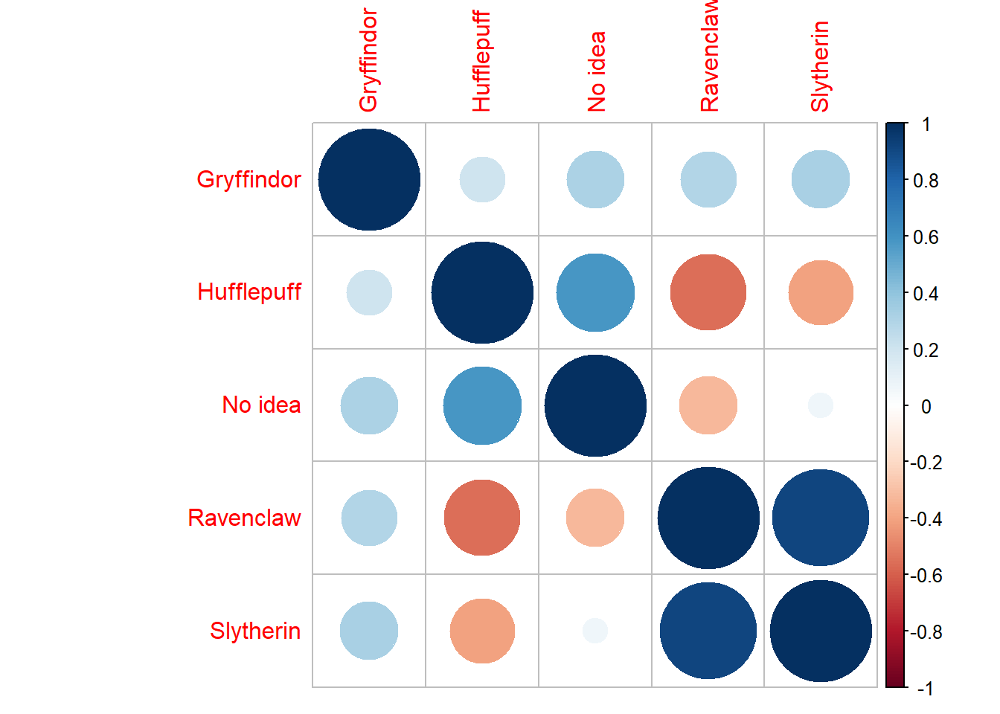
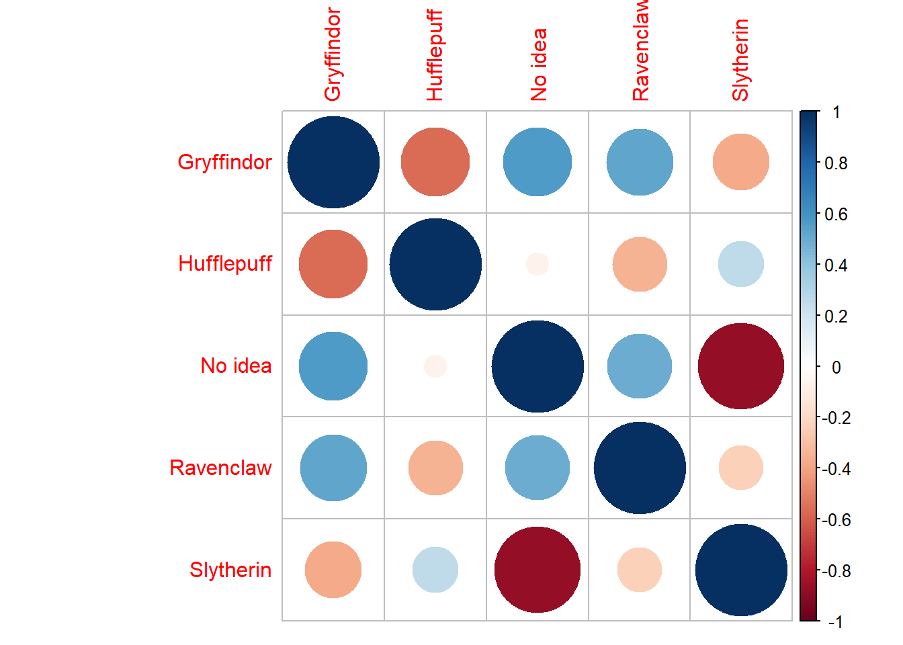
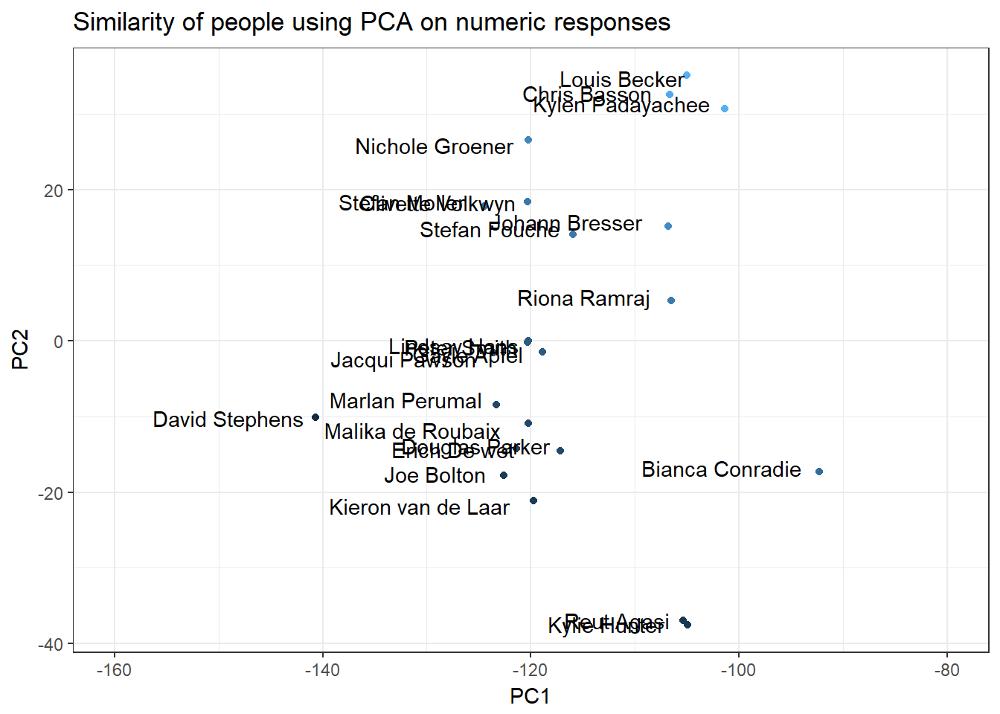

8020 Hogwarts Sorting Hat!
Back story
As part of the challenge of the month we had each Eighty20 employee fill out an online questionare that sorts you into one of the great Harry Potter houses.
I thought it would be fun to start playing with the data in R!
Load up the data
I’ve downloaded the data into the stats team folder if anyone wants to load it from over there.
This is what it looks like:
hogwarts_data %>% head## # A tibble: 6 x 8
## Name Surname `Gryffindor %` `Hufflepuff %` `Ravenclaw %` `Slytherin %`
## <chr> <chr> <int> <int> <int> <int>
## 1 Kylie Hunter 41 79 65 21
## 2 Johann Bresser 58 34 77 40
## 3 Gayle Apfel 54 64 58 64
## 4 Nicho~ Groener 74 40 62 66
## 5 Stefan Fouche 53 38 88 48
## 6 Peter Smith 70 64 54 54
## # ... with 2 more variables: `Which house did you want to be in?` <chr>,
## # `Which house did you think you would be in?` <chr>Summarise data
Before we start, it’s always a good idea to just look at the data… So here we go:
Add some useful labels
clean_desired_house <- function(list_in,desired) {
names_in <- c("Gryffindor" , "Hufflepuff" ,"Ravenclaw" , "Slytherin" )
max_out <- which(list_in == list_in %>% flatten_dbl() %>% max)
desired_house <- ifelse(any(names_in[max_out] == desired),TRUE,FALSE)
}
clean_top_house <- function(list_in,desired) {
names_in <- c("Gryffindor" , "Hufflepuff" ,"Ravenclaw" , "Slytherin" )
max_out <- which(list_in == list_in %>% flatten_dbl() %>% max)
desired_house <- ifelse(any(names_in[max_out] == desired),TRUE,FALSE)
if(length(max_out)>1){
return("multiple_top_houses")
} else {
return(names_in[max_out])
}
}
hogwarts_data %<>%
setNames(names(.) %>% stringr::str_remove_all("%| ")) %>%
mutate(in_desired = pmap_lgl(.,~clean_desired_house(list_in = list(..3,..4,..5,..6),desired = ..7))) %>%
mutate(top_house = pmap_chr(.,~clean_top_house(list_in = list(..3,..4,..5,..6),desired = ..7)))Distribution of affinity to each house
hogwarts_data %>%
select(-top_house,-in_desired,-`Whichhousedidyouwanttobein?`,-`Whichhousedidyouthinkyouwouldbein?`) %>%
gather(key = "House",value = "Affinity",Gryffindor,Hufflepuff,Ravenclaw,Slytherin) %>%
ggplot()+
geom_bar(aes(x = House,y=Affinity %>% reorder( -table(Affinity)[Affinity]),fill=Name),position = "dodge", stat = "identity")+
ggtitle("Affinity to each house by name")+
ylab("Affinity")
Number of people in each house
hogwarts_data %>%
group_by(top_house) %>%
tally %>%
ggplot()+
geom_bar(aes(x = top_house,y=n, fill = top_house),position = "dodge", stat = "identity")+
ggtitle("Number of members in each house")
Cross tabulation of each person’s top house VS desired house
hogwarts_data %>%
group_by(top_house,`Whichhousedidyouwanttobein?`) %>%
tally() %>%
spread(key = `Whichhousedidyouwanttobein?`,value = n,fill = 0)## # A tibble: 5 x 6
## # Groups: top_house [5]
## top_house Gryffindor Hufflepuff `No idea` Ravenclaw Slytherin
## <chr> <dbl> <dbl> <dbl> <dbl> <dbl>
## 1 Gryffindor 2 0 1 2 1
## 2 Hufflepuff 1 2 2 0 0
## 3 multiple_top_houses 0 0 0 2 1
## 4 Ravenclaw 1 1 4 1 1
## 5 Slytherin 0 0 1 0 0Cross tabulation of each person’s top house VS expected house
hogwarts_data %>%
group_by(top_house,`Whichhousedidyouthinkyouwouldbein?`) %>%
tally() %>%
spread(key = `Whichhousedidyouthinkyouwouldbein?`,value = n,fill = 0)## # A tibble: 5 x 6
## # Groups: top_house [5]
## top_house Gryffindor Hufflepuff `No idea` Ravenclaw Slytherin
## <chr> <dbl> <dbl> <dbl> <dbl> <dbl>
## 1 Gryffindor 2 0 2 2 0
## 2 Hufflepuff 0 2 2 1 0
## 3 multiple_top_houses 0 1 0 1 1
## 4 Ravenclaw 1 0 2 5 0
## 5 Slytherin 0 0 1 0 0Exploration
We can try exploring this data by looking for interesting correlations:
Correlations between houses predicted
hogwarts_data[,3:6] %>%
as.matrix() %>%
cor() %>%
corrplot::corrplot()
People scoring high affinity towards gryffindor often score low affinity towards Ravenclaw. Other than that there aren’t all that many interesting correlations
Correlations between top house and desired house
hogwarts_data %>%
select(top_house,`Whichhousedidyouwanttobein?`) %>%
table %>%
cor() %>%
corrplot::corrplot()
Now we start seeing more interesting correlations.
Apparently people who want to be in Ravenclaw often end up in Slytherin and vice versa. More over, these people don’t often get associated with Hufflepuff.
On the contrary people who end up in Hufflepuff often have no idea where they want to be (I know… big surprise)
Correlations between top house and expected house
hogwarts_data %>%
select(top_house,`Whichhousedidyouthinkyouwouldbein?`) %>%
table %>%
cor() %>%
corrplot::corrplot()
Here we see something a little different. People who have no idea where the hat will put them are almost never placed in slytherin. Also, expectations towards Hufflepuff infer low expectations for gryffindor and vice versa.
Odly enough, even though we said people who don’t know where they want to be end up in Hufflepuff; these people seem to think they are gona end up in either Gryffindor or Ravenclaw
Visualize similarity of people
We can visualize the similarity between Eighty20 employees by plotting the principal component analysis of the sorting hat results in 2 dimensions:
pca_recipe <- function(data){
data %>%
recipe %>%
step_pca(all_numeric(),num = 2) %>%
prep %>%
bake(newdata = data)
}
plot_data <-
hogwarts_data %>%
pca_recipe %>%
mutate(intensity = PC1+PC2)
plot_data %>%
ggplot() +
geom_point(aes(col = intensity,x = PC1,y=PC2))+
geom_text(label = paste(plot_data$Name,plot_data$Surname),aes(x=PC1,y=PC2),check_overlap = F,hjust=1.1,position=position_jitter(width = 1.1,height = 1.1))+
xlim(c(-160,-80))+
ggtitle("Similarity of people using PCA on numeric responses")+
theme_bw()+
theme(legend.position="none")
Artificial intelligent sorting hat!
An analytics team blog just won’t be the same without some artificial intelligence!
Let’s create an artifical intelligent sorting hat… But, what data will we use to make something cool? So far things are looking a bit thin.
I decided to augment the data by parsing some text from our yearly award ceremonies. They look like this:

Example of augmented data
Here is an example of what the new data looks like:
hogwarts_augmented_data %>%
filter(Name == "Joe") %>% t()## [,1]
## Name "Joe"
## Surname "Bolton"
## Gryffindor % "28"
## Hufflepuff % "70"
## Ravenclaw % "88"
## Slytherin % "56"
## Which house did you want to be in? "Slytherin"
## Which house did you think you would be in? "Ravenclaw"
## recent_awards_text "For his constant (and infectious) positivity, sunny disposition and can-do attitude towards work, his colleagues and life "How does our AI hat learn?
We will teach the AI hat how to sort people into houses by feeding it a representation of the words used in each award and the corresponding scores the person recieved for each house.
We can change the representation of the words by encoding them using a number dictionary:
training_samples <- 18
validation_samples <- 5
tokenizer <- text_tokenizer(num_words = 1000) %>%
fit_text_tokenizer(hogwarts_augmented_data$recent_awards_text)
sequences <- texts_to_sequences(tokenizer, hogwarts_augmented_data$recent_awards_text)An example encoding looks like this:
sequences[[1]]## [1] 33 14 34 35 2 15 36 37 38This roughly translates to a sentance that contained unique word 33, 14, 34 and so forth.
Here are the first 15 words in this dictionary:
word_index = tokenizer$word_index
cat("Found", length(word_index), "unique tokens.\n")## Found 186 unique tokens.word_index %>% head(15)## $`for`
## [1] 1
##
## $and
## [1] 2
##
## $to
## [1] 3
##
## $the
## [1] 4
##
## $of
## [1] 5
##
## $always
## [1] 6
##
## $on
## [1] 7
##
## $being
## [1] 8
##
## $a
## [1] 9
##
## $all
## [1] 10
##
## $with
## [1] 11
##
## $work
## [1] 12
##
## $`in`
## [1] 13
##
## $is
## [1] 14
##
## $solid
## [1] 15The maximum award has 33 words
sequences %>% map_dbl(length) %>% max## [1] 33Now that we have these encoded texts we need to create a co-occurrence matrix:
sequences[which(map_lgl(sequences,is.list))] <- c(0)
data <- pad_sequences(sequences, maxlen = 33)
# labels <- as.array(labels)
labels <- hogwarts_augmented_data[,3:6] %>% as.matrix
cat("Shape of data tensor:", dim(data), "\n")## Shape of data tensor: 23 33cat('Shape of label tensor:', dim(labels), "\n")## Shape of label tensor: 23 4indices <- sample(1:nrow(data))
training_indices <- indices[1:training_samples]
validation_indices <- indices[(training_samples + 1):(training_samples + validation_samples)]
x_train <- sequences[training_indices]
y_train <- labels[training_indices,]
x_val <- sequences[validation_indices]
y_val <- labels[validation_indices,]
vectorize_sequences <- function(sequences, dimension) {
results <- matrix(0, nrow = length(sequences), ncol = dimension)
for (i in 1:length(sequences)){
results[i, sequences[[i]]] <- 1
}
results
}
x_train_data <- vectorize_sequences(x_train,dimension = length(word_index))
x_test <- vectorize_sequences(x_val,dimension = length(word_index))
x_train_data[1:10,1:10]## [,1] [,2] [,3] [,4] [,5] [,6] [,7] [,8] [,9] [,10]
## [1,] 1 0 0 1 0 0 0 0 0 1
## [2,] 1 1 1 0 1 0 0 1 1 1
## [3,] 1 1 1 1 0 0 1 0 0 0
## [4,] 0 0 0 0 0 0 0 0 0 0
## [5,] 1 1 0 1 0 0 0 0 0 0
## [6,] 1 1 0 0 1 0 0 1 1 1
## [7,] 1 1 0 0 0 0 0 0 0 0
## [8,] 1 0 1 0 0 1 0 1 0 0
## [9,] 1 0 0 0 0 1 0 0 0 0
## [10,] 0 1 1 0 0 1 0 0 1 0Now we build and train our AI sorting hat
model <- keras_model_sequential() %>%
layer_dense(units = 16, activation = "relu", input_shape = ncol(x_train_data)) %>%
layer_dense(units = 16, activation = "relu") %>%
layer_dense(units = ncol(y_train), activation = "softmax")
model %>% compile(
optimizer = "rmsprop",
loss = "categorical_crossentropy",
metrics = c("accuracy")
)
history <- model %>% fit(
x_train_data,
y_train,
epochs = 1000,
batch_size = 8,
# batch_size = 512,
validation_data = list(x_test, y_val)
)
history %>% plot
ggsave("Pictures/one_hot_sorting_hat.jpeg")
model %>% save_model_hdf5("../../static/data/one_hot_sorting_hat.h5")Apparently our artificial intellegent sorting hat thinks it can guess right 40-60% of the time based only on a colleague’s banter!
Seems a bit fishy to me!?
Let’s see how confident the model is:
Prediction <- model %>% predict(x = x_train_data)
colnames(Prediction) <- colnames(y_train)
Prediction %>% head## Gryffindor % Hufflepuff % Ravenclaw % Slytherin %
## [1,] 0.2091126 0.2941652 0.2817090 0.2150132
## [2,] 0.2455596 0.3930991 0.2596076 0.1017337
## [3,] 0.2414507 0.2289573 0.3560682 0.1735238
## [4,] 0.2198174 0.2463817 0.2560816 0.2777194
## [5,] 0.2896401 0.2567767 0.3111432 0.1424400
## [6,] 0.3930273 0.1590494 0.1471451 0.3007783Hmmm… Not very confident, but maybe the AI is on to something!